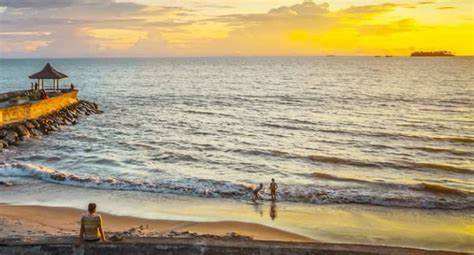
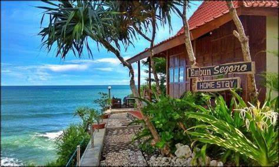

PANTAI PARIAMAN
PANTAI PARIAMAN


Pantai Pariaman, Wisata Pantai Favorit di Pusat Kota Pariaman
Pantai Identik dengan pasir dan
pohon nyiur yang melambai seperti lagu rayuan pulau kelapa. Indonesia memang Negara yang kaya akan
pantainya serta pulaunya.
Disalah satu propinsi di Sumatera, tepatnya di Sumatera Barat terdapat sebuah pantai yang cukup
unik, dan tentunya menjadi salah satu khas tersendiri.
Tepatnya di Pariaman, Sumatera Barat ada sebuah pantai yang cukup unik dan tentunya memiliki
keindahan yang dapat memukau para traveller untuk mengunjunginya.
Pantai tersebut adalah Pantai Kata. Pantai Kata merupakan pantai yang terletak di Kota Pariaman
dengan deretan hamparan pasir putih yang luas, air lautnya yang bersih serta bening kebiru-biruan.
Sepanjang pantai ini tidak ada pohon nyiur yang melambai-lambai seperti pantai pada umumnya, akan
tetapi terdapat deretan pohon pinus, yang membuat pantai ini cukup terkenal di kalangan para
traveller.
Lokasi dari pantai Kata Pariaman sendiri terletak di selatan kota Pariaman, atau tepatnya di desa
Karan Aur dan Desa Taluak. Nama kata sendiri sebenarnya di ambil dari suku kata terdepat dari kedua
nama desa tersebut.
Dari Pariaman sudah banyak sekali petunjuk jalan atau rambu-rambu yang menunjukkan perjalanan untuk
ke Pantai Kata. Traveller bisa pergi ke sini dengan menggunakan berbagai macam kendaraan, baik roda
empat maupun roda dua.

Setelah sampai di pantai ini traveller bisa melakukan berbagai aktifitas
petualangan dan bermain di pantai seperti jalan-jalan di tepi pantai, berenang maupun
snorkeling. Beberapa fasilitas di sekitar pantai juga sangat mendukung kegiatan traveller yang
ingin liburan seperti rumah makan, café dan mushola yang terdapat di tepi pantai tersebut.
 Jadi ketika malam hari kita bisa bersantai sambil
ngopi di beberapa kafe yang ada di sekitar wisata ini. Bagi traveler yang berpasangan, tempat ini kami
rekomendasikan. Karena kamu bisa ngopi bareng sambil ditemani suasana romantis di area pantai pada
malam hari.
Jadi ketika malam hari kita bisa bersantai sambil
ngopi di beberapa kafe yang ada di sekitar wisata ini. Bagi traveler yang berpasangan, tempat ini kami
rekomendasikan. Karena kamu bisa ngopi bareng sambil ditemani suasana romantis di area pantai pada
malam hari.
Jika ingin menginap untuk menikmati lebih dari
pantai tersebut, Pantai Kata juga terdapat penginapan seperti homestay, cottage, guesthouse hingga
hotel. Bagi traveller ala backpacker tidak perlu khawatir dengan harga fasilitas ada di Pantai Kata,
semuanya masih sangat terjangkau.
Dengan harga yang ramah dikantong, anda dan
keluarga bisa menikamti keindahan Pantai Kata, dan bermalaman dengan suasana di dekat pantai. Mulai
harga dari 100 ribuan anda bersama keluarga bisa menikamti keindahan, kesejukan, dan angin sepoi-sepoi
yang membuat suasana hati anda menjadi gembira.
FORM KOMENTAR